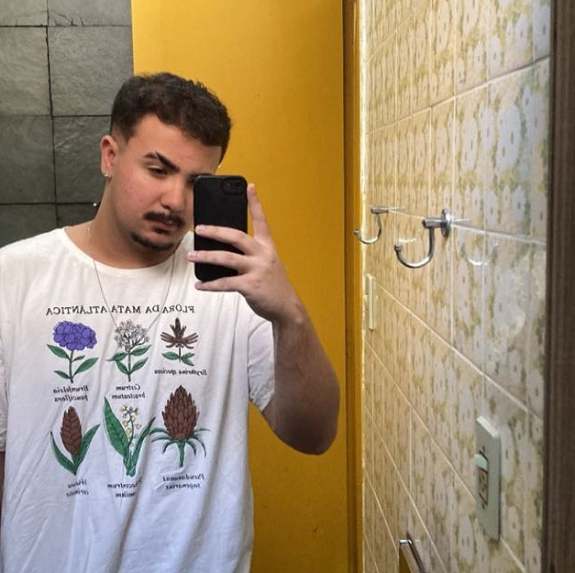
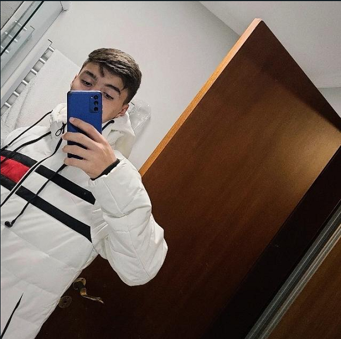
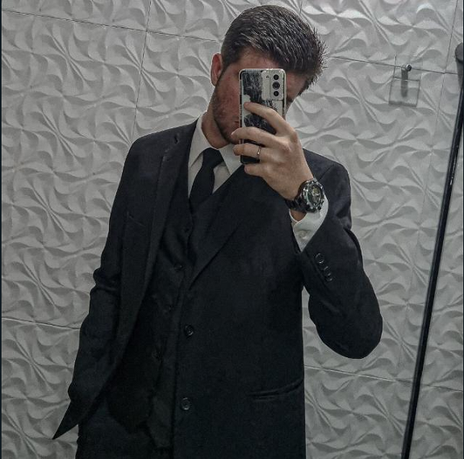
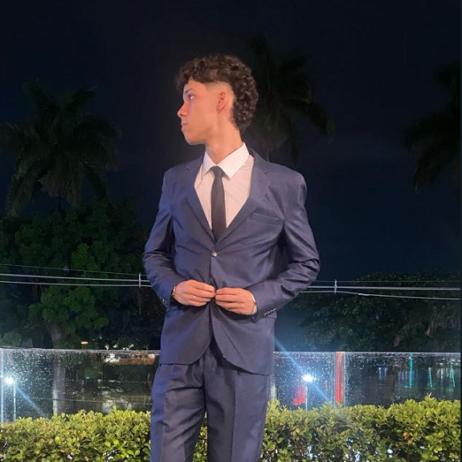
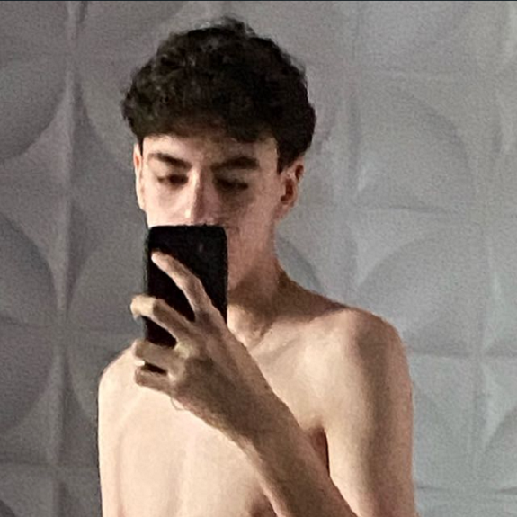
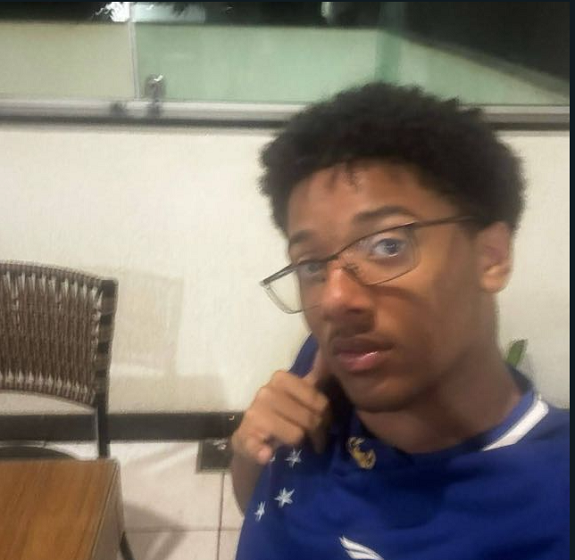
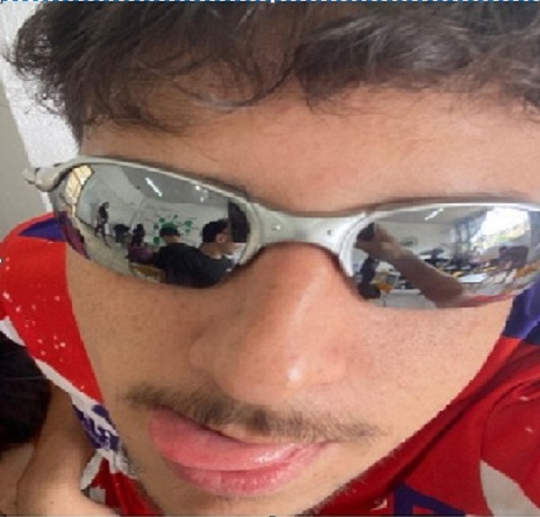

-
Pepeko, o IGL
Pepeko possui um corpo muito resistente, com seu alto intelecto consegue passar boas estratégias para seus companheiros de equipe, além de sua mira buffada. Sua função principal é de suporte, gostando muito de ser sentinela, mas também é um bom atirador.
Maior Elo: Plat 3 / Função: Flex -
Migas, o diamante fracassado
Apesar da mira monstruosa de Migas, ele não consegue ter o mínimo de noção possível do jogo, sendo troll a maior quantidade de partidas possíveis, além de instapickar duelista.
Maior Elo: Dima 2 / Função: Duelista -
Lebot, o aposentado
Lebot já foi um dos melhores jogadores do grupo, mas com o passar do tempo, ele foi se cansando e se despedindo da jogatina competitiva. Hoje em dia, ele joga raramente, mas ainda consegue ser melhor que muitos players diários.
Maior Elo: Plat 3 / Função: Duelista -
Edershow, o troll
Edershow é um dos piores jogadores do grupo, sempre trollando e xingando os companheiros de equipe, saindo sem avisar e ficando off em muitas partidas. Apesar disso, ele increvelmente já conseguiu ser platina, hoje se afundou no prata.
Maior Elo: Plat 1 / Função: Flex -
Davizn, o inconsistente
Davizn é um jogador que oscila muito, em um dia ele pode estar carregando a partida, no outro ele pode estar simplesmente acabando com sua partida. Tem uma mira muito boa e um bom conhecimento de jogo.
Maior Elo: Asc 1 / Função: Duelista -
Gagol, o sem noção
Gagol é um jogador que não tem noção de jogo nenhuma, sempre fazendo escolhas erradas. Apesar disso, ele tem uma mira acima da média e consegue carregar algumas partidas.
Maior Elo: Ouro 2 / Função: Flex -
Cansado né vida, o clutcher
Conhecido como o homem clutch, Cansado né vida é essencial para a vitória nas partidas, tendo seu desempenho totalmente ligado ao seu emocional. Ainda assim, ele se destaca por sua noção de jogo acima da média e é claro seus clutchs, os quais ele aumenta sua gameplay em até 5x.
Maior Elo: Dima 1 / Função: Flex